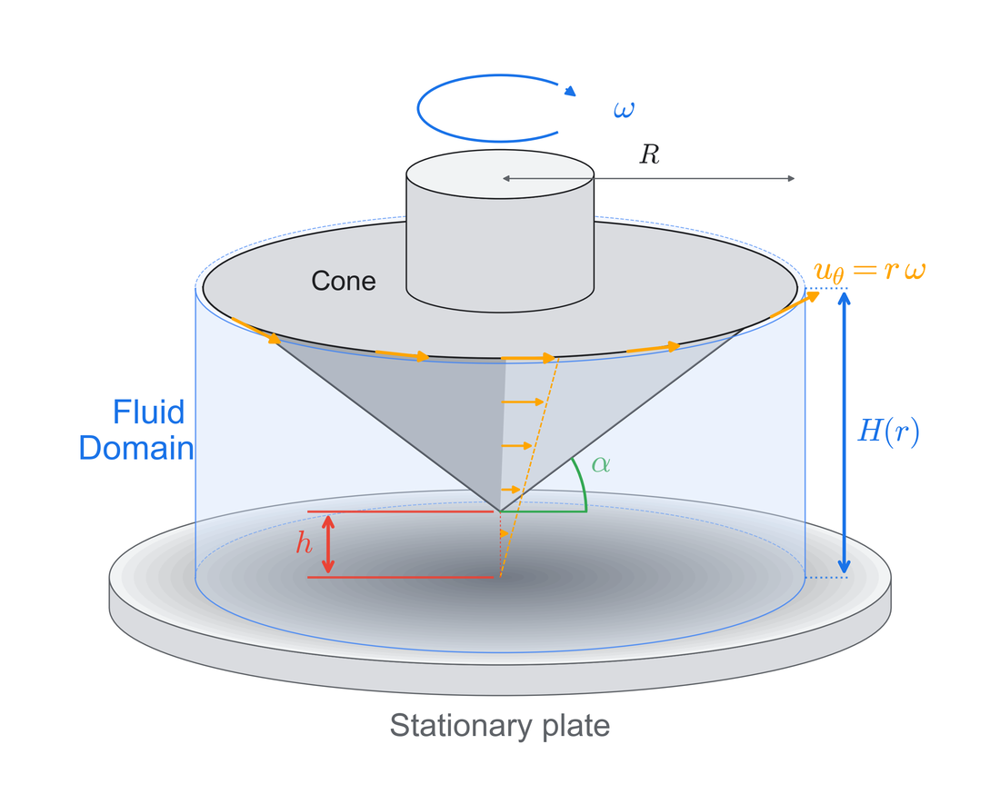
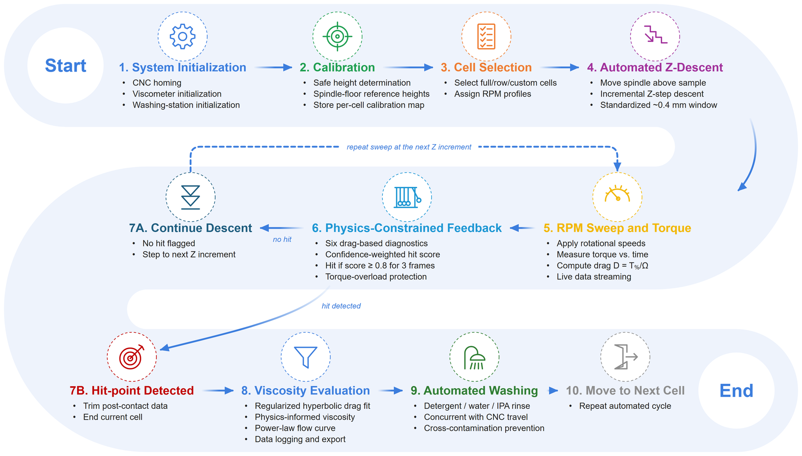
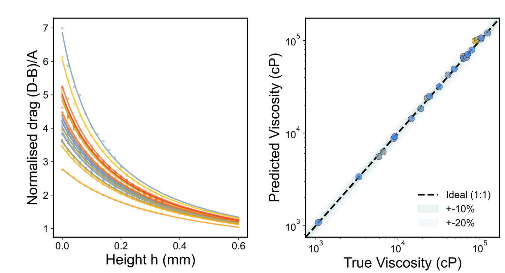
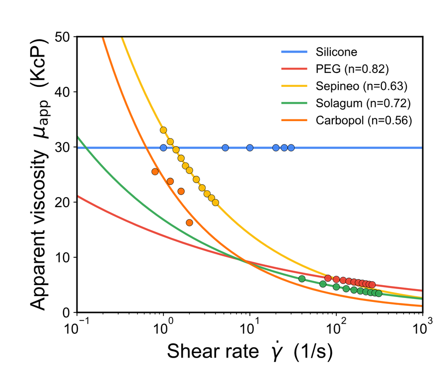
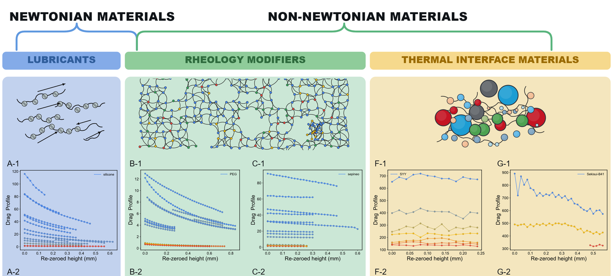
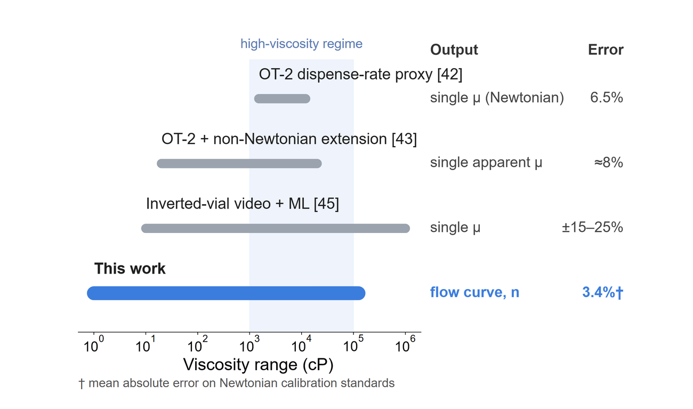
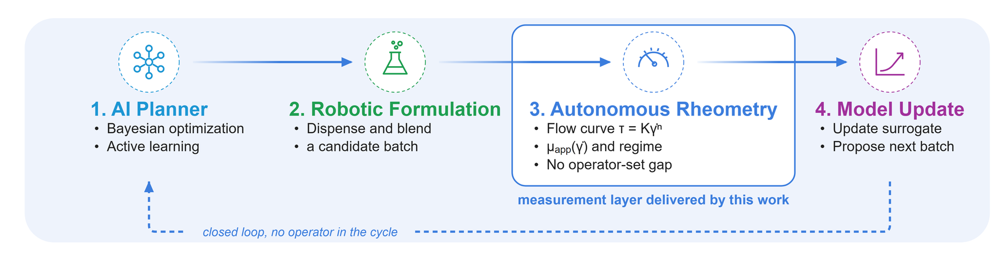

AutoVisco is a self-driving rheometer. It reads the torque signal of a descending cone, constrains it with lubrication theory, and returns a full flow curve, τ = Kγ̇n, with no operator setting the gap.
Planners propose candidates in seconds, but rheology is still measured by hand. Existing automated viscometers act as proxies and return one Newtonian number, which hides exactly the shear-thinning and structure-forming behaviour that formulators care about.
Bayesian optimization and active learning already outperform grid and random search. Decision-making is rarely the bottleneck.
Pipetting and camera proxies report a single viscosity per fluid. None recover a non-Newtonian constitutive curve autonomously.
Automated rotational rheometry over 1–125,000 cP that returns a calibrated flow curve and rheological class from one universal calibration.
Instead of engineering micrometre-precise gap control, the platform lets lubrication theory explain how torque grows as the cone approaches the plate, and absorbs mechanical uncertainty into fitted parameters.

Move the sliders to see how the drag model and the power law behave. These are the same functional forms the pipeline fits to every descent.
D(h) = A / (h + hc) + B. Viscosity scales A; hc regularizes the h → 0 singularity.
Apparent viscosity μapp = Kγ̇n−1 on log axes. Newtonian
A physics-constrained feedback layer stops each descent at contact, the analysis chain turns drag into a flow curve, and washing runs while the stage travels to the next cell.

Closed-loop workflow: calibration, incremental Z-descent, confidence-weighted hit detection, evaluation, and concurrent washing.
Calibrated once on silicone oils, the same model stack resolves lubricants, rheology modifiers and thermal interface materials, and places AutoVisco as the constitutive measurement layer for closed-loop discovery.





Raw descents, calibration runs, material measurements and analysis outputs, organized by manuscript figure and released under CC BY 4.0.
The control software, live characterization engine and web dashboard ship as one Python package. Analysis and figures run without any hardware.
git clone https://github.com/AC-Formulations-SDL5/AutoVisco.git cd AutoVisco pip install -e ".[analysis,dev]" pytest
Install the package and run the test suite (hardware tests are skipped automatically).
# Reproduce the material rheology (Fig. 8) jupyter lab analysis/figure8_material_rheology.ipynb # Live characterization engine on a dataset python examples/live_pipeline_demo.py data/06_materials/sepineo.csv # Hardware + web dashboard python run_viscometry.py
If AutoVisco, its data or its code help your work, please cite the article.
@article{rastegardoost2026autovisco,
title = {A Self-Driving Rheometer: Physics-Constrained Signal Interpretation for Autonomous
High-Viscosity Characterization of Newtonian and Non-Newtonian Fluids},
author = {Rastegardoost, Mohammad M. and Ngunga, Ian and Gaborekwe, Koketso and Bao, Zeqing and
Naguib, Hani and Le Devedec, Frantz},
journal = {Digital Discovery},
year = {2026},
note = {Submitted}
}Mohammad M. Rastegardoost, Ian Ngunga, Koketso Gaborekwe, Zeqing Bao, Hani Naguib, Frantz Le Devedec.
Acceleration Consortium, University of Toronto; University of Toronto Scarborough; University of Waterloo.
Canada First Research Excellence Fund (CFREF-2022-00042) and SEKISUI CHEMICAL CO., LTD.
Questions about the platform, the data, or a collaboration? Reach out to either of us, or open an issue on GitHub.
Acceleration Consortium, University of Toronto
Acceleration Consortium, University of Toronto